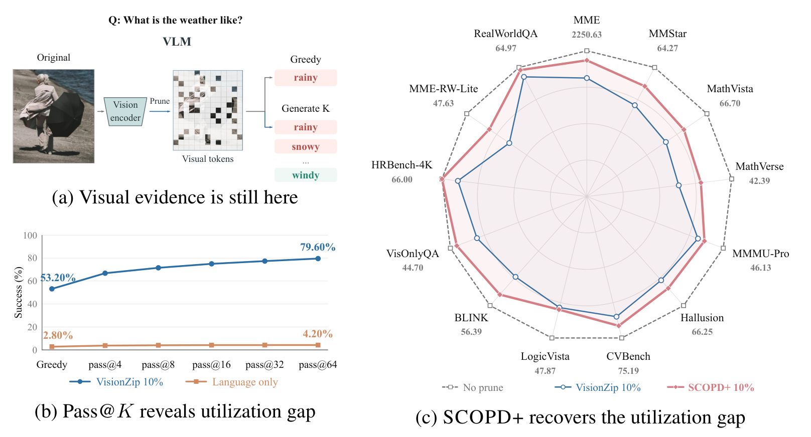
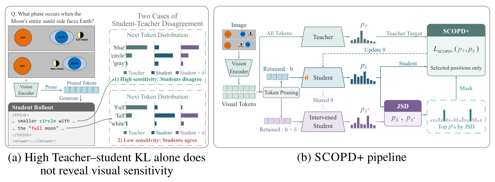

Generate with less
The student samples its own reasoning trajectory using only the retained visual tokens.
Prune the visual tokens.
Learn to use what remains.
Recovering reasoning ability in sparse visual contexts
through on-policy self-distillation.
fewer visual tokens
normalized performance retained
over pruning without adaptation
Qwen2.5-VL-7B-Instruct · VisionZip · 10% retention · 13 image benchmarks
Pruning can remove information. It can also make surviving information harder for a model to use.
Reasoning vision-language models process images and videos as long sequences of visual tokens, making inference expensive. Training-free pruning reduces this cost, but performance drops under aggressive compression. Our fixed-context Pass@K analysis shows that correct reasoning can still be recovered from the same pruned visual representation. We call this the representation–utilization gap.
We introduce SCOPD, a sparse-context on-policy self-distillation framework. A student generates reasoning trajectories from pruned visual tokens, while a privileged full-context teacher supervises those same prefixes. SCOPD+ goes further: a small visual-budget intervention identifies the reasoning positions most sensitive to visual evidence, and distillation focuses on those positions.
At 10% visual-token retention, SCOPD+ improves the normalized mean across 13 image benchmarks from 86.37% to 92.43%. The approach requires no ground-truth responses, architectural changes, or additional inference-time model computation.
Efficient VLMs depend on which visual tokens remain and how reliably the model uses them.
Different reasoning trajectories, the exact same sparse visual context.

Repeated sampling reveals recoverable capability. SCOPD trains the model to use sparse evidence more reliably during inference.
Sparse-context reasoning. Full-context supervision.
The student samples its own reasoning trajectory using only the retained visual tokens.
An EMA teacher sees the full visual context and scores the same student-generated prefixes.
A small increase in visual context reveals sensitive positions. SCOPD+ distills the top 10%.

Explore the trade-off across visual-token budgets.
Each benchmark is normalized to the unpruned Vanilla model, then averaged. A score of 100 matches that reference; this is not raw accuracy. Source: Table 1.
Raw benchmark scores at 10% visual-token retention. The full-context Vanilla reference is shown for comparison.
| Benchmark | Full-context Vanilla | Vanilla | SCOPD | SCOPD+ |
|---|
Sparse-context adaptation transfers across pruners and from images to video.
Trained with VisionZip, SCOPD+ improves all four tested pruning operators without further adaptation.
Vanilla → SCOPD+ · Table 3
Post-training Qwen3-VL-4B with the same sparse-context setup also improves performance under pruning.
Vanilla → SCOPD+ · Table 4
Image-only adaptation improves five video benchmarks, with no video-specific post-training.
Vanilla → SCOPD+ · Table 5
All comparisons use 10% visual-token retention. Avg6 and Avg5 are normalized means over different benchmark sets and should be read separately from Avg13.